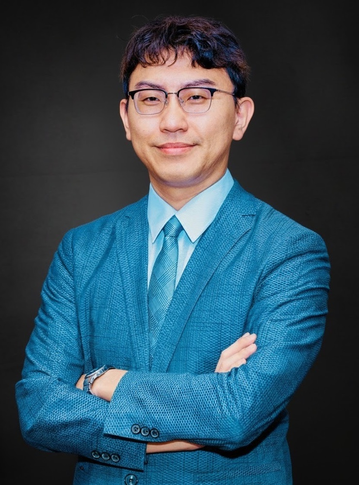
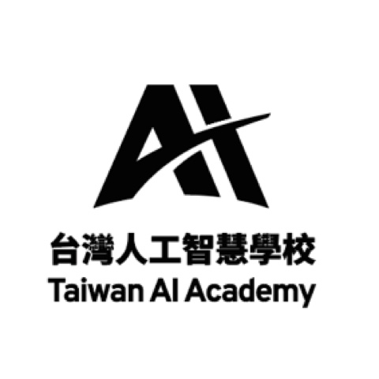
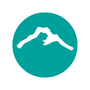
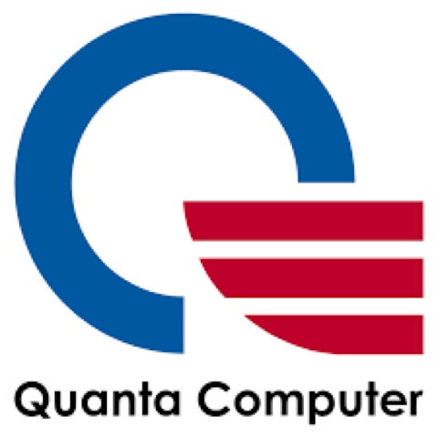
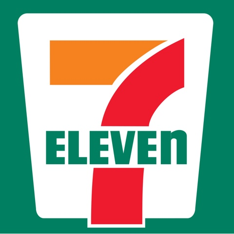
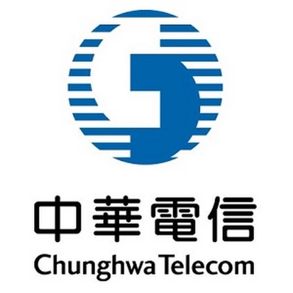
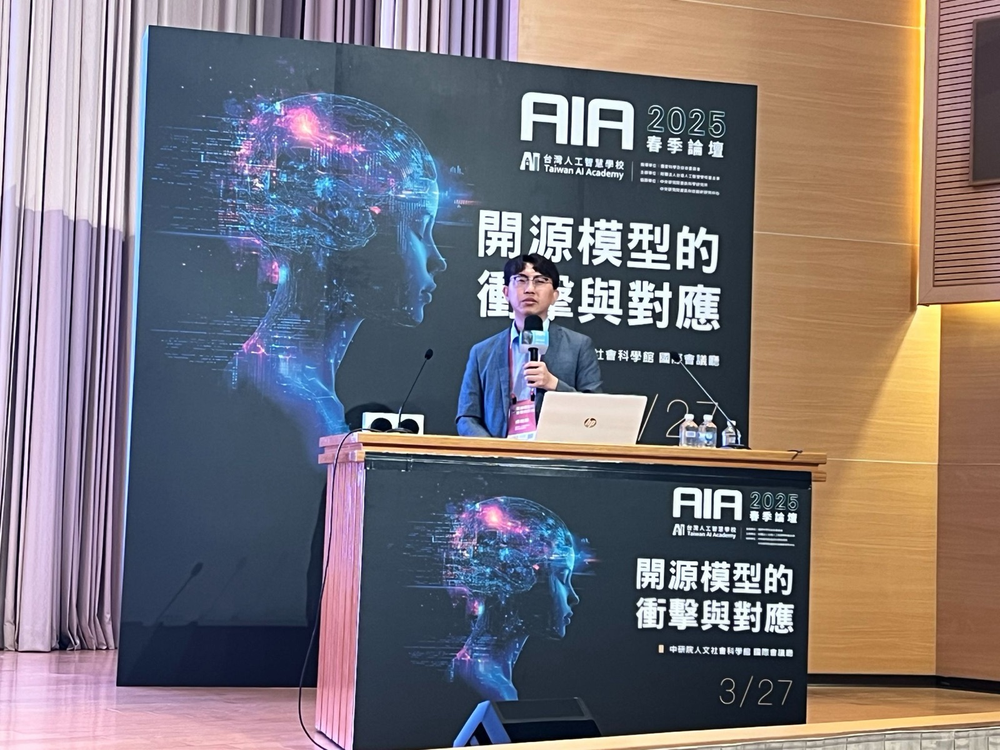
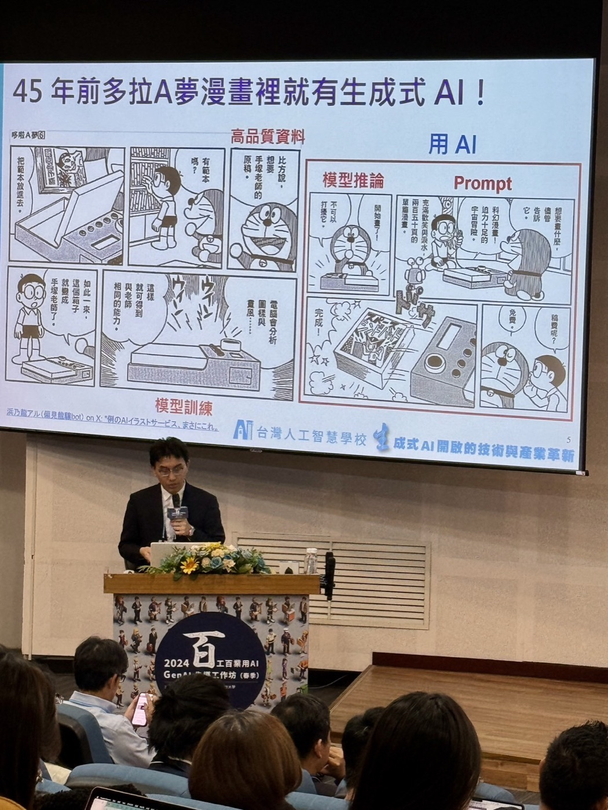
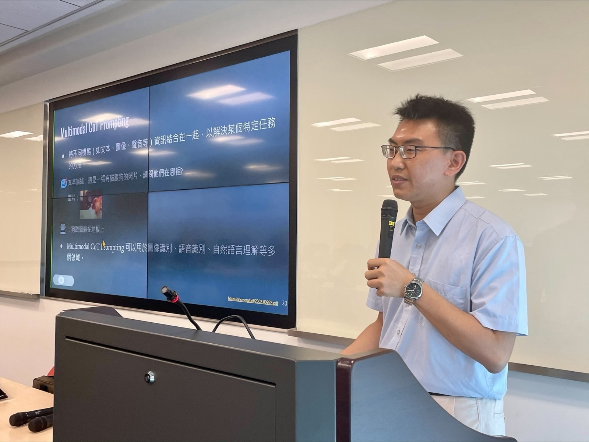
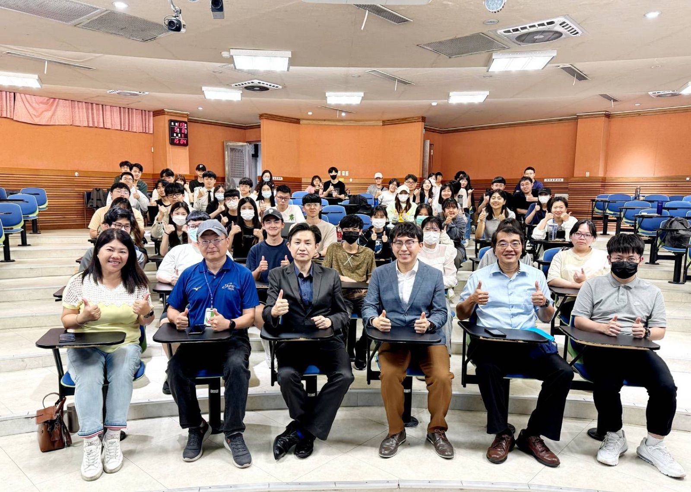

採用斷層
上課很興奮，回去用不起來
沒有角色情境與可複用範本，AI 很快退化成偶爾問答的工具。

AI STRATEGY・WORKFLOW・SOLUTION
從組織需求診斷、工作流程重設，到 RAG、Agentic Workflow 與 AI Agent 原型驗證；依真實情境組合策略、技術與團隊賦能，讓 AI 從概念走向可採用的方法。
THESIS
真正需要的不是更多工具，
而是能持續使用的方法。
累積紀錄・涵蓋管理決策、工作應用與技術實作
任職・授課・公開活動經歷（部分）





組織現場 / THE GAP
真正阻礙採用的，通常不是沒聽過 AI，而是問題、資料、流程與責任還沒有被放在同一張圖上。
採用斷層
沒有角色情境與可複用範本，AI 很快退化成偶爾問答的工具。
優先級模糊
從高頻、低風險、可驗證的任務開始，才能累積可擴大的成功模式。
治理落差
員工必須知道什麼能輸入、如何查核，以及哪些判斷不能交給 AI。
授課現場 / IN THE FIELD




解決方案地圖 / SOLUTION PATHS
每條路徑都以組織情境與成熟度為起點，依需要組合診斷、流程、原型與能力移轉。
OPPORTUNITY & GOVERNANCE
協助決策團隊辨識高價值情境、資料風險、推動順序與必要的角色責任。
WORKFLOW REDESIGN
將高頻知識工作拆解為輸入、判斷、生成與查核，形成能被團隊重複使用的流程。
SOLUTION PROTOTYPING
結合組織資料與工具邊界，快速建立可操作原型，驗證價值、可行性與風險。
ENABLEMENT & ADOPTION
透過情境工作坊、技術 Lab 與內部種子培育，讓方法留在團隊，而不只停在一次 Demo。
導入方法 / D-WAVE
一套從問題診斷到能力移轉的五段流程，讓每次推進都有可驗證的決策依據。
盤點目標、角色、資料、工具環境與高頻工作任務。
拆開輸入、判斷、生成、查核與交付，找出 AI 適用邊界。
依情境建立 Prompt、知識檢索、自動化或 Agent 原型。
從正確性、時間、可重複性、風險與體驗檢查成果。
交付範本、技術說明與使用守則，建立後續迭代方式。
精選經歷 / EXPERIENCE
以下為公開授課與活動內容摘要，僅呈現主題與場域，不代表相關單位之推薦或背書。
金融・主管培育
製造・技術實作
零售・工作應用
跨產業・AIGC
醫療・高敏感場域
高階管理・系列課
為何是蔡政霖 / THREE LENSES
AI 顧問的價值，不只在於示範工具，而是把組織問題轉成可驗證的技術路徑，並看見採用、資料與治理之間的關係。
現職 Dentsu Staff AI Engineer，專長涵蓋 LLM、RAG、AI Agents 與生成式 AI pipeline。
曾任台灣人工智慧學校基金會技術發展處技術總監，具跨產業問題拆解與不同技術層級的溝通經驗。
具生物醫學資訊與醫療 AI 背景，並擔任長庚醫院 IRB 獨立諮詢專家。
參與方式 / WORKING NOTES
可以。先透過訪談釐清目標、角色、資料與現行流程，再決定適合從工作坊、原型驗證或較完整的導入路徑開始。
可依範圍完成解決方案藍圖、Workflow 與可操作原型；若進入正式系統、長期維運或大型整合，會再確認內部團隊與技術夥伴的分工。
會先確認帳號、API、雲端、資料敏感度與權限條件；正式資料原則上留在組織核准的環境中，必要時先以去識別或模擬資料驗證。
可以。涉及內部文件、錄影、原始碼、跨單位使用或成果權利時，會在開始前依資料與使用方式確認界線。
情境交流 / START WITH A PROBLEM
留下背景後，頁面會產生一封 Email，方便從問題、現況與期待成果開始交換想法；涉及內部資訊可配合保密協議。
f901107@gmail.com ↗